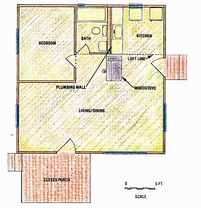

The Stacklumber House
Efficiently building a wood home with buying advice, tools, foundation and floor, walls and roofing.
By Robert Jones
July/August 1983
What's 2 X 4 tall, 40 days long, and $5, 000 wide?
Are magazine house-building articles and real estate ads just wish book fantasies for you .. . mainly because-every month your bank balance asks the same cold question: "What in the world can you build with a few thousand dollars?"
Well, my solution to that problem is a 24' X 24' home with 3-1/2"-thick, solid wood walls that contains a 9' X 12' bedroom, a full bath, a convenient kitchen, a 12' X 24' living/dining room, a spacious loft . . . and an 8' X 12' screened porch. It has an open feeling created by a cathedral ceiling lined with knotty pine, the warmth of wooden floors and walls, and the beauty of exposed overhead beams in every room.
This house is both conventional and unique, because it is built mostly from stacks of 2 X 4 lumber laid broad face down. . . in fact, it took nearly two miles of them to construct the house. Now nailing down 10,000 linear feet of 2 X 4's may sound like a job for a covey of carpenters, but-if you are willing to tackle such a task-you can build a house similar to the one I've described by yourself. What's more, you can make it in less than two months using conventional hand tools
How do I know it can be done? Simple: Between June 21 and August 1, 1982, I built the house pictured here . . . for less than $5,000.
PLAN TO SAVE
Although I constructed this stack lumber house almost entirely by myself, I did have assistance in designing the dwelling. I'm glad, too, because my partner and I have learned one important rule from other building projects: If a structure is to be finished within a budget, more time must be spent planning than will be needed for the actual construction work. We knew that, before buying any materials, we'd have to visualize every step of the building process . . . all the way down to mentally counting the nails in the molding around the front door.
Though our budget had an upper limit of $5,000, we hoped to be able to complete the basic house for about $500 less than that . . . to allow for plumbing, fixtures, and a metal chimney. Obviously, then, our home would be no sprawling mansion. Our first design measured 16'x20', ut try as we might, we couldn't spil up the space to give us the rooms we needed. After that initial drawing, we tried just about every imaginable combination of dimension between the original ones and the final 24'x24' plan we settled on and discarded all other possible layouts.
It's likely that your own needs in housing will be somewhat different from ours, but I'd like to recommend that you pay careful attention to standard building-material sizes, no matter what the shape of the home you design. To give you an idea of what a lack of such planning can do to you, imagine what would have happened if we'd thought a 2 X 4 did measure two inches by four inches. Since those boards are actually 1-1/2" X 3-1/2", we'd have come up 2 feet short in our wall height . . . or 1,536 linear feet from having enough lumber to give us standing room!
On the positive side, planning your design around standard material lengths can save both time and money. Our 24' X 24' layout allowed me to use combinations of 8'-, 10'-, 12'-, 14'-, and 16'-long 2 X 4's, and full sheets of 4' X 8' plywood (laid down in either direction). Because of the wall construction, our home required only 60 sheets of plywood (for subfloor, loft floor, roof, and skirting), but believe me, it was much easier just to plop down a full sheet and nail it than it would have been to cut each piece to size with a handsaw. Furthermore, the roof pitch we chose (when combined with the floor plan) allowed us to use 16'-long 4 X 6 rafter beams and combinations of full sheets of plywood . . . so, once again, time and money were saved.
STACKLUMBER?
You may be wondering why we chose to construct a house of stacked 2 X 4's . . . and perhaps, like many people we've talked with, you've assumed that it's excessively expensive. On the contrary, our preliminary figures showed that a 2 X 4 house could give a conventional one (built from stud walls sheathed with imitation board and-batten plywood, and finished with inexpensive paneling) a real run for our money. Besides, we wanted to try "crib construction." We believed that walls made with 2 X 4's would have the solidity and beauty of those constructed with logs, and yet they would be easy to build. Then, too, the beams and the pine boards used for the floors and ceiling would complement solid wooden walls, adding to the attractiveness and warmth of our home. In the end, the only nonwood materials that we elected to ;se were 15-pound felt and 28-gauge metal roofing.
BUYING AT THE BEST PRICE
Nearly all of the materials we needed had !o come from a lumberyard, yet our "local"
yards ranged from 60 to 180 miles from the building site. Since cost was our major concern, we decided on which suppliers to use by comparing bids on a fixed list of materials. We had already received preliminary prices from a dozen different lumberyards, so we selected the three lowest for detailed bidding. (Those early figures varied by a factor of almost two, because some suppliers had offered us contractors' discounts while others had not.)
We gave the three final bidders detailed lists describing each item as specifically as possible. I don't believe that you can be too precise on this matter. For example, I asked for 6,000 board feet of Douglas fir 2 X 4's, Standard and better, in equal amounts of 8', 10', 12', 14', and 16' lengths. Plywood was ordered as 1/2" CDX 4' X 8', four- or five ply, not mill certified. At the same time, I asked each bidder to include the delivery cost and the expiration date on the prices quoted.
When the bids came back, their totals differed only slightly. So, though the closest yard to the site bid a little higher for the materials, its offer of free delivery tipped the scales. (The more distant suppliers wanted in excess of $200 for trucking.) Looking back on that decision now, I feel certain that it was a good one. In any building project, no matter how carefully it's planned, there will be some returns, exchanges, and unforeseen purchases . . . and it's a lot easier to drive 120 miles round trip than it is to travel 360.
FINAL OBSTACLES
One problem that we had with all three of our materials bids was that they exceeded our budget. Consequently, before we could accept one and get started on the building, something had to go. One sizable expense was windows and doors. For example, the lowest price on a prehung, solid-core door was $135 . . . and we needed two of them. Then there were the interior doors and seven windows, which brought the total to more than $800.
We definitely were not willing to compromise on window area . . . since too little natural lighting can turn even the best space into a cell. We therefore looked into using Utility- or Economy-grade lumber instead of the Standard we'd planned on . . . but that offered only a $150 saving up front, and would surely mean that more wood would be wasted on culls and cutting. So we rejected that possibility as false economy. What about roll roofing instead of the more expensive metal that we'd had in mind? That change would have provided considerable initial savings, but sun, hail, and snow would have brought on early repair and replacement: more false economy.
After discussing many other conceivable compromises, we somehow came upon the idea of checking out salvage yards. Though the first one we went to carried nothing but high-priced junk, the second had an excellent selection of good merchandise at reasonable cost. We picked up windows that had been ripped out of a doctor's house during remodeling and doors from an old telephone company office. All told, we left the yard with all our doors and more window area than we'd thought we could afford . . . for only $200.
Auctions also helped us meet our budget by providing a 4-1/2'-long cast-iron bathtub for $3.00, along with a toilet, a cast-iron sink, faucets, and another old tub for a total of $5.00. (One bathtub ended up as a watering trough for our horses.) Our kitchen counter tiles came from another auction . . . where we picked up more than 100 of the 6" X 6" pieces for a mere $6.50. (For first rate buying advice, I recommend Randy Kidd's article, "Farm Auction", in MOTHER NO. 72, page 126.)
TOOLS
Our building site had (and has) no electricity, so the only power tool I could use was a chain saw. Actually, that suited me fine, since one of my goals in the project was to demonstrate that it could be done without electric tools, and essentially by one person . . . even as a summer project for an in-his fifties dude such as me who sits on his duff at an indoor job the other nine months of the year.
The list of tools that are really necessary is quite short: two well-sharpened crosscut saws . . . a well-balanced construction hammer . . . framing and T-squares . . . a 25foot measuring tape . . . 4-foot and spirit (for a chalk line) levels . . . a combination plumb bob and chalk line . . . a combination wrecking bar and nail puffer . . , a keyhole saw . . . a brace and bits . . . wood chisels . . . a spade . . . and a 6-foot stepladder and a 28-foot extension ladder.
FOUNDATION AND FLOOR
I used a somewhat unconventional foundation consisting of three 24'-long pressure treated 4 X 12's set on 4" of gravel in trenches just deep enough to keep the tops of the wood flush with the ground. The beams were set parallel, 12 feet apart, and a 16 "high stub wall of pressure-treated 2 X 4's and 2 X 6's was nailed along the full length of each one. (See Photo 1.)
I laid the 2 X 8 joists across these "foundations", and then nailed 1/2" CDX plywood on top of them, spacing the nails 4 inches apart along the joists. After lapping a layer of 15-pound felt over the subfloor, I set I X 6 tongue-and-groove pine flooring at right angles to the 2 X 8's. As is often the case with long pieces of tongue-and-groove material, minor twisting of the boards forced me to "encourage" them to fit. I soon found that a long 2 X 4 set alongside a reluctant floorboard and nailed to the floor at one end, combined with a 6" piece of tongue-and groove between it and the board to be set, makes a wonderful lever. With it, I could persuade the crookedest rascal to get in the groove and nestle against its neighbor.
Once the floor was in place, I mopped it with a clear sealer and preservative. That waterproofing came just in the nick of time, too, because the application was quickly followed by several days of unexpected rain . . . during which I sloshed about, trying to keep materials covered with sheets of plastic.
TWO MILES OF 2 X 4's
After the weather cleared, I prepared to build the walls by laying the door frames out on the floor and carefully marking the necessary clearances. The first layer of 2 X 4's I set painstakingly on the marks (much as the sill would be in a stud-frame house), which made raising the walls just a matter of proceeding upward while maintaining plumb. (See Photo 2.)
To keep the joints staggered, I nailed 2 X 4's down in one direction all the way around the perimeter and then turned around and returned in the opposite direction. Crib construction only requires careful measurements, square cuts, attention to plumb, and a lot of nailing. Admittedly, this is a laborious process, but it can be sped up by laying out the materials in neat stacks according to length. That way, the longest possible pieces can be used in combination while still staggering the joints. (A typical combination might be an 8' and a 16', a 12' and a 12', and then a 10' and 14'.) It's also important to set the nails so that they don't hit the ones in previous tiers. I used a zigzag pattern in which a 16d nail was set every 16 inches ... with two pounded into each lapped corner.
During planning, we determined how many layers of 2 X 4's would be needed to reach the bottoms of the window openings. Once I reached those levels, I tacked a note below each portal, which listed the number of tiers and the height of the opening in inches. I therefore had a direct reference to show me when I'd reached the top of each window opening.
As the walls began to rise above the lower edges of the windows, it became necessary to brace some of the sections until their boards once again spanned an entire side. I did this for each precarious wall portion by constructing an upright triangle of 2 X 4's, setting one side against the section, and then temporarily nailing the brace to the 2 X 4 stack to keep the wall plumb. Of course, I regarded the four foot bubble level as the final authority on what was actually vertical.
Since the interior partitions (with the exception of the plumbing wall between the kitchen and bath) were also to be built of stacked 2 X 4's, I left some board-end-sized openings in the outside tiers to help "anchor" the inner walls. By interlocking such right angled stacks, the whole structure was stiffened substantially.
I must confess that, while I was stacking 2 X 4's, my mind sometimes wandered to a problem that nagged at me: How would I lift, by myself, the 26'-long 4 X 10 ridge beam to the gables' peaks, almost 20 feet above the ground? Perhaps, I thought, the task of getting the 4 X 10 roof beams up to their somewhat lesser-elevation would offer some inspiration.
Once the walls were up far enough for the beams to be put in place, I slipped those 4 X 10's through a window from the outside and then dragged them onto the floor from the inside. Using 2 X 8 planks on sawhorses as a scaffold, I lifted first one end of each beam and then the other. This procedure was a bit tricky. Since the beams are as long as the house is wide, I had to turn them sideways a bit to get them up. And then one hard jerk could pull a poorly lodged beam off the narrow ledge and send it crashing onto the floor! During the process, I constantly reminded myself to take my time . . . think . . . and plan! Consequently, I managed to get all of the joists up without any accident more serious than whacking my thumb.
As I set the beams to their four-foot spacing, I realized that, despite my careful calculations, I'd failed to plan for the 2 X 4 wall sections that would fit between the beam ends. This required five rows-or nearly 500 linear feet-of lumber, which quickly exhausted the supply of boards I'd planned on using to build the front porch. Fortunately, there was still some leeway left in our budget.
With those beams set and leveled, I laid more I X 6 tongue-and-groove pine to form the ceiling for the rooms below and added plywood atop that to form the loft floor. This produced a solid platform from which to work on the gables and-all too soon that ridge beam.
To insure that each gable continued as a straight extension of the wall below, I nailed the edges of two 2 X 4 X 16's together at right angles, set them against the outside of the existing wall, pushed them up until the top ends reached the expected height of the roof peak, and spiked them solidly. From there, I also extended 16' boards to the walls as temporary guides to establish the pitch of the roof.
I was pleased by how quickly the first gable went up . . . but the completion of that task left me filled with apprehension. The time for dealing with that 26' ridge beam had come.
BEAM THEM UP
Any foolish thoughts I might have had about lifting that ridge beam up to its high perch had vanished as I grunted beneath the weight of the ceiling beams. So I realized that I would have to devise a way to raise the beam a little at a time, safely! (I had a few nightmare images of that monster dropping 20 feet to the floor below . . . with me underneath it.)
I'd previously worked the beam up to the loft floor (as I had the ceiling beams) and dragged it around to lie between the gables. Now, at first lifting by hand, and then with a small hydraulic Jack, I raised the end of the beam which was hanging over the unbuilt gable end and added layers of 2 X 4's to the wall. When the pitch of the beam became too great for that, I began to stack scraps beneath it on the end with the completed gable.
Eventually, I reached the point where something more sturdy was needed to support the 4 X 10, so I built tracks of vertical 2 X 4's at each end of the loft. (See Photo 3.) The beam slid snugly between the boards, and each time I jacked the 4 X 10 up about 6 more inches I nailed a 2 X 4 block beneath it-to the tracks-to support the weight. Working up in such steps, I finally managed to finish the other gable. Then, with my wrecking bar, I gradually jimmied the monstrous hulk along until it rested firmly and squarely across the roof peak.
At the end of that day's work, I felt so elated that I wanted to swing from the ridge beam by my toes . . . but, wisely, I restrained myself.
ROOFING
Another job I'd been dreading-more for fear of harm to my budget than to my body -was cutting and notching the 4 X 6 rafters. If I made a mistake in the cutting, I'd ruin an expensive piece of lumber and end up driving 120 miles to replace it. As you can well imagine, I measured, remeasured, calculated, checked, and rechecked, those supports. To be completely certain that I had it right, I even cut a pattern from a piece of scrap, which-once proved to be the correct configuration-was transferred to each rafter.
My care proved to be well worth the effort when I lifted that first roof-holder into position and found that it fit perfectly. And when all the rafters finally were in place against the ridge beam, I saw a vision of a beautiful vessel, keel-side up, sailing through the lovely blue sky.
But my euphoria ended the next day, when a job that I'd expected to be easy turned out to be brutal. I had imagined that I could cut the excess lengths from the gable 2 X 4's merely by running a chain saw diagonally, using the top of the rafter next to them as a guide. Unfortunately, the motorized saw proved useless-because it couldn't get a firm bite in the wood and ended up leaving a ragged mess-so I was forced to cut from the peaks down to the walls with a handsaw . . . through almost 70 feet of solid 2 X 4's! Since that painful day, I've probed my brain for an easy solution to the problem . . . but to no avail. (I'd love to hear suggestions, but remember, no electric power tools!)
I lifted the CDX sheathing for the roof piece by piece-up from the rack on my pickup truck, installing it from the gutters upward so that each new sheet would have a lip to hold it in place while I nailed. Then came 15-pound felt, which, after it repeatedly blew back in my face, I temporarily secured with lengths of 1 X 2 as I worked. During these final stages, my two-section extension ladder was invaluable, since one length-laid on the roof-gave me a perch to work from, and the other a means of getting up there in the first place. By working my way down from the peak with the ladder placed next to the working area, I managed to get the metal roofing on with a minimum of drama.
HOUSEWARMING
We began to move in on the same day that I finished the roof.. the next day was August 1, the deadline I'd set for myself. Of course, at that point there was still plastic over the window openings. But the doors were up, the kitchen and bath were functional, and-with the quarry-tile counters, the stainless steel sink, and our $25 Monarch range hooked to its Metalbestos chimney-we were ready to enjoy our first dinner in our new home.
It was two more days before the windows were in, and four more passed before we could sit on our finished screened porch in the cool of the evening and thumb our noses at the mosquitoes. "Not bad," I crowed to myself while relaxing. Despite five days lost to rain and three more to travel, I'd completed the 2 X 4 house in 40 working days. Some of them had been 12 hours long . . . but, looking back, I think every one of them was rewarding.
 PHOTOS BY THE AUTHOR COUNTERCLOCKWISE LSE FROM UPPER LEFT. The house stands on three stub walls built from pressure-treated limber . . . . The front wall of 2 X Q's goes up around the door opening fat left t), which is cross braced with boards .... The ridge beam was raised one step at a time,between two tracks of vertical 2 X 4's, while the gable on the nearest end was constructed beneath .... The completed $5,000 home. design measured 16' X 20', but try as we might, we couldn't split up the space to give us the rooms we needed. After that initial drawing, we tried just about every imaginable combination of dimensions between the original ones and the final 24' X 24' plan we settled on. I can assure you that we drew, argued about, and discarded all other possible layouts. |
 |
|